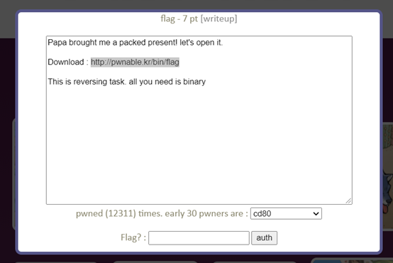
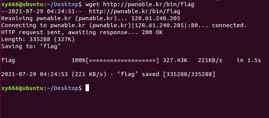
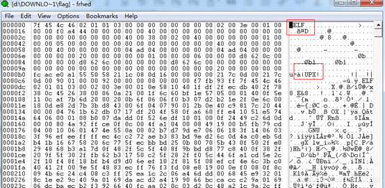
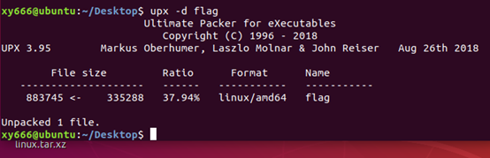
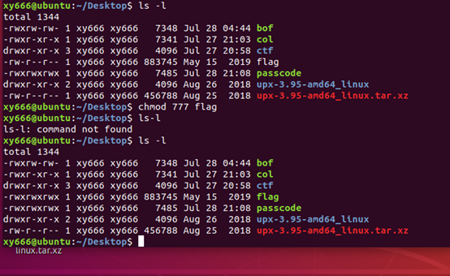
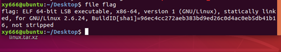
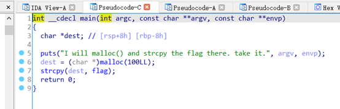
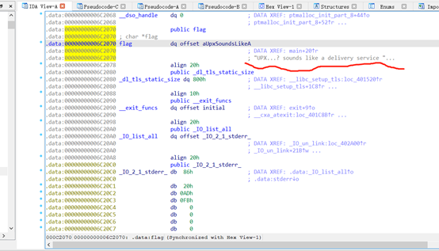
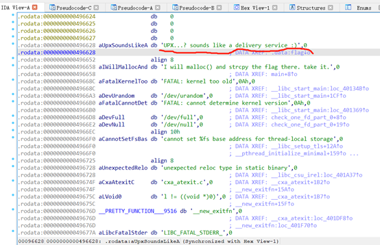

flag
1：拿到题目，借助网址下载相应文件1：拿到题目，借助网址下载相应文件


命令1：wget http://pwnable.kr/bin/flag
2：通过网络资料知：
“用个16进制查看器看一下,是elf文件,并且加了upx壳,要脱下upx壳才好分析”

这16进制查看器我不知道咋弄的，该图也是从网上搬来的。
3：由于upx不为自带文件，需自行下载，相应Linux指令附着于下：
（1）：下载upx：命令2：
wget https://github.com/upx/upx/releases/download/v3.95/upx-3.95-amd64_linux.tar.xz
（2）：解压二进制：命令3：
tar -Jxf upx*.tar.xz
（3）：为了方便使用移动 upx 到系统变量目录，如果不愿意使用 root 的话可以将 upx 目录添加到环境变量：命令4：
sudo cp upx*/upx /usr/bin
4：利用upx 进行解压，upx -d filename：

基本操作不做过多赘述，实在不理解请自行百度查找（其实我也不理解，会用就行）
命令6：upx -d flag
5：查看文件是否下载至当前路径（我的当前路径为Desktop（桌面））：

此处进行了权限赋予操作（赘余操作，可不必进行）
命令7：chmod 777 flag
6：运用file命令查看flag文件的位数情况（32位 or 64位）：

命令8：file flag
由此得知flag文件为64位文件
7：现在只需将flag文件拖动至Windows界面中的64位ida中进行反编译即可，具体操作在此不做赘述（拖动文件会吧？不用教了吧，拖不出来的话考虑换一个虚拟机吧）
8：接下来就是常规操作，按下ok，找到main函数按下F5，结果如下：

9：分析main函数，并无特别之处，但那flag格外显眼，经合情推理，flag内置于内存之中，这时我们只需双击flag便可进入如下界面，并发现flag地址处存储的一组字符串：

UPX…? sounds like a delivery service但这并不是flag
10：双击字符串后进入另一界面，此时flag便出现了：

正解flag：UPX…? sounds like a delivery service :)
1 | flag：UPX...? sounds like a delivery service :) |